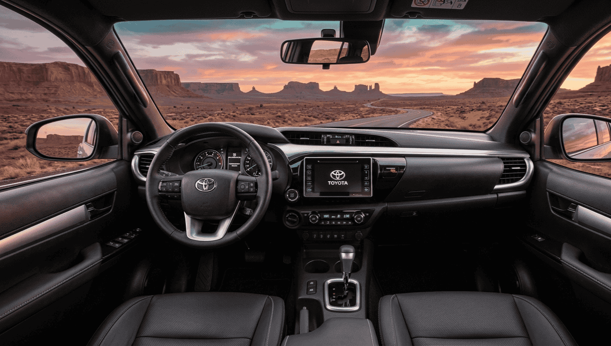

Hay modelos que trascienden su propia categoría. El Toyota Hilux es uno de ellos. Desde su nacimiento en 1968, ha construido una reputación casi mitológica de vehículo indestructible, capaz de soportar las condiciones más extremas del planeta. Ahora, con la novena generación del modelo (2025), Toyota presenta por primera vez una versión completamente eléctrica que plantea una pregunta fascinante: ¿puede una pick-up eléctrica mantener el espíritu del Hilux?
He recopilado toda la información disponible hasta la fecha —datos oficiales de Toyota, especificaciones confirmadas y análisis de medios especializados— para ofrecer una visión completa de lo que representa este nuevo capítulo en la historia del Hilux.
El Hilux y su leyenda: por qué importa esta electrificación
Para entender el peso de esta decisión, hay que recordar qué significa el Hilux. Según Wikipedia, es uno de los vehículos más vendidos de la historia, con presencia en más de 180 países y una producción acumulada de más de 20 millones de unidades. Su fiabilidad es tan legendaria que el programa Top Gear intentó destruir uno sin éxito, convirtiéndolo en un icono de la cultura automovilística.
El Hilux BEV forma parte de la estrategia multitecnología de Toyota, que no apuesta por una sola solución sino que despliega simultáneamente versiones diésel, híbridas, eléctricas y, en el futuro, de hidrógeno. Como señala Autoweek, esta aproximación permite a Toyota cubrir distintos mercados y necesidades sin abandonar ningún segmento.
No se trata, por tanto, de una ruptura radical sino de una evolución calculada. Toyota no ha diseñado el Hilux eléctrico para sustituir al diésel, sino para ofrecer una alternativa donde la electrificación tiene más sentido: flotas urbanas, servicios públicos y mercados con restricciones medioambientales crecientes.
Doble motor eléctrico y tracción total permanente
Bajo la carrocería del Hilux BEV trabaja un sistema de doble motor eléctrico que proporciona tracción integral permanente (AWD). Según los datos publicados por Auto Bild España, las cifras confirmadas son:
⚙️ Motorización del Toyota Hilux BEV
- Configuración: Doble motor eléctrico (uno por eje)
- Potencia total: 144 kW (≈196 CV)
- Par motor: ≈474 Nm instantáneos
- Tracción: Total permanente (AWD)
Los 196 CV pueden parecer modestos comparados con pick-ups eléctricas americanas que superan los 500 CV, pero aquí lo relevante no es la potencia bruta sino cómo se entrega. El par eléctrico es instantáneo, disponible desde cero revoluciones, algo que en conducción off-road marca una diferencia enorme frente a los motores de combustión. No hay turbo lag, no hay que buscar el rango de revoluciones adecuado: pisas y tienes 474 Nm de inmediato.
Además, el control electrónico del par en cada rueda permite una gestión mucho más precisa de la tracción que cualquier sistema mecánico tradicional. En terrenos complicados —barro, arena, nieve— esto puede ser incluso más efectivo que una reductora convencional.
Batería, autonomía y tiempos de carga
La batería del Hilux eléctrico tiene una capacidad de 59,2 kWh de iones de litio, integrada directamente en el chasis de largueros del vehículo. Según la información publicada por Toyota España, esta integración no es casual: protege la batería frente a impactos en conducción off-road y reduce el centro de gravedad del vehículo, mejorando la estabilidad.
Cifras de autonomía según Auto Bild España:
- Autonomía WLTP combinada: entre 240 y 260 km
- Autonomía en ciclo urbano: hasta 385 km
Hay que ser honestos: 240-260 km no son una cifra espectacular en 2025. Cualquier turismo eléctrico medio supera ampliamente esos números. Pero el Hilux no es un turismo, es una pick-up de trabajo que pesa considerablemente más y cuya aerodinámica nunca fue una prioridad de diseño. La cifra urbana de 385 km resulta más reveladora, porque indica dónde espera Toyota que este vehículo trabaje la mayor parte del tiempo.
En cuanto a la carga:
⚡ Tiempos de carga del Hilux BEV
- Carga rápida DC: del 10% al 80% en aproximadamente 30 minutos
- Carga doméstica (wallbox 7,4 kW): carga completa en unas 8-9 horas (estimación basada en capacidad de batería)
Fuente: Auto Bild España
Los 30 minutos de carga rápida son un tiempo razonable y adecuado para el uso profesional. Un trabajador que para a desayunar puede recuperar la mayor parte de la autonomía en ese tiempo. Y para carga nocturna en casa o en la base de una flota, las 8-9 horas se ajustan perfectamente a un turno de descanso. Si quieres optimizar el coste de esa carga nocturna, en nuestra guía de ahorro en electricidad explicamos cómo hacerlo.
Capacidades de carga y remolque
Aquí es donde la electrificación impone sus compromisos. La batería añade un peso significativo al vehículo, lo que inevitablemente reduce las capacidades de carga y remolque respecto a la versión diésel.
🚚 Capacidades del Hilux BEV
- Carga útil: ≈715 kg
- Capacidad de remolque: ≈1.600 kg
Fuente: Auto Bild España
Para ponerlo en contexto, la versión diésel del Hilux puede cargar más de una tonelada y remolcar hasta 3.500 kg. La versión eléctrica ofrece, por tanto, aproximadamente un 30-50% menos de capacidad en estos apartados.
¿Es esto un problema? Depende del uso. Como apunta Die Welt, los 715 kg de carga útil y los 1.600 kg de remolque son cifras más que suficientes para la mayoría de usos urbanos y logísticos: reparto de última milla, servicios municipales, mantenimiento de infraestructuras, obras menores. Donde no encaja es en trabajos agrícolas pesados o en remolcar maquinaria de gran tonelaje.
Tecnología off-road: el ADN todoterreno se mantiene
Toyota no ha sacrificado las capacidades todoterreno del Hilux en su transición eléctrica. Según la información publicada por la sala de prensa de Toyota España, el Hilux BEV incorpora:
- Multi-Terrain Monitor (MTM): Sistema de cámaras que permite visualizar el terreno alrededor del vehículo en tiempo real
- Control electrónico de par por rueda: Cada motor gestiona independientemente la tracción de su eje, con capacidad de frenar selectivamente ruedas individuales
- Equivalente electrónico a reductora: El control electrónico del par sustituye la función de la reductora mecánica tradicional
- Batería protegida en chasis de largueros: Integración que actúa como protección estructural frente a impactos con rocas u obstáculos
Hay un argumento que me parece especialmente interesante: la tracción eléctrica puede ser más precisa que la mecánica en off-road. Un diferencial mecánico con bloqueo trabaja de forma binaria (bloqueado o libre), mientras que los motores eléctricos pueden distribuir el par de forma continua y proporcional según las condiciones del terreno. La electrónica reacciona en milisegundos, mucho más rápido que cualquier sistema mecánico o hidráulico.
Interior y equipamiento tecnológico

El interior del Hilux BEV combina la robustez característica del modelo con una actualización tecnológica significativa
El interior del Hilux BEV refleja la actualización generacional completa. Aunque Toyota no ha desvelado todos los detalles del equipamiento para el mercado europeo, la novena generación del Hilux presentada en 2025 incorpora mejoras sustanciales en tecnología y confort respecto a su predecesora.
Se espera cuadro de instrumentos digital, pantalla central multimedia con conectividad actualizada y un diseño interior que equilibra la funcionalidad propia de un vehículo de trabajo con los estándares de confort que exigen los mercados europeos en 2025. La versión eléctrica, al eliminar la transmisión mecánica y el túnel central del propulsor diésel, podría ofrecer mayor espacio útil en el habitáculo.
¿Para quién está pensado el Hilux eléctrico?
Este es quizás el punto más importante de toda la review, porque define las expectativas correctas. El Toyota Hilux BEV no está pensado para sustituir al Hilux diésel en todos sus usos. Es una herramienta para escenarios específicos.
✅ Escenarios ideales para el Hilux BEV:
- Flotas urbanas y periurbanas: Empresas de servicios, mantenimiento, construcción ligera
- Servicios municipales: Ayuntamientos, parques y jardines, gestión de residuos
- Zonas de bajas emisiones (ZBE): Acceso sin restricciones a centros urbanos con etiqueta CERO
- Empresas con compromiso ambiental: Descarbonización de flotas corporativas
- Uso mixto profesional-personal: Profesionales que necesitan una pick-up pero hacen principalmente trayectos locales
⚠️ Escenarios donde el diésel sigue siendo más adecuado:
- Trabajo agrícola pesado con largas distancias entre puntos de carga
- Remolque frecuente de cargas superiores a 1.600 kg
- Rutas largas por zonas sin infraestructura de carga
- Uso en entornos donde se necesita carga útil superior a 715 kg de forma habitual
Como señala Die Welt, Toyota posiciona claramente el Hilux BEV como un vehículo de uso local, no como un todoterreno de expedición. Y eso no es una limitación, es un planteamiento honesto. La mayoría de los Hilux vendidos en Europa se usan en contextos urbanos y periurbanos, no cruzando el Sáhara.
La ventaja económica es clara: los costes operativos de un vehículo eléctrico son significativamente menores que los de un diésel (menor coste por kilómetro, prácticamente cero mantenimiento mecánico, y ventajas fiscales importantes como la exención del IVTM en muchos municipios y la etiqueta CERO de la DGT).
Precio estimado y llegada a España
Toyota aún no ha confirmado el precio oficial del Hilux BEV para el mercado español. Lo que sí sabemos, según Carnovo, es que su llegada a Europa está prevista entre 2025 y 2026.
En cuanto al precio, Híbridos y Eléctricos recoge declaraciones de responsables de Toyota en las que señalan que "no tendría sentido" un precio excesivamente alto. La estrategia parece orientada a mantener al Hilux BEV en un rango superior al diésel pero accesible para flotas profesionales, no en el territorio de los 80.000-100.000€ que manejan competidores como el Ford F-150 Lightning o la Rivian R1T.
Teniendo en cuenta que el Hilux diésel de gama alta se mueve en la franja de 40.000-50.000€ en España, es razonable esperar que la versión eléctrica se sitúe por encima de esas cifras, pero dentro de un margen que permita amortizar la diferencia con los menores costes operativos a lo largo de la vida útil del vehículo.
Además, las flotas profesionales pueden beneficiarse de ayudas como el Plan MOVES 2025 y de las deducciones fiscales por inversión en vehículos de cero emisiones, lo que reduciría significativamente el coste neto de adquisición.
Valoración: evolución lógica con interrogantes
Después de analizar toda la información disponible, mi valoración del Toyota Hilux BEV es la de un producto coherente y bien planteado, pero que no pretende ser revolucionario. Y eso puede ser tanto su mayor virtud como su principal limitación.
📊 Resumen de especificaciones clave
Lo que ofrece:
- ✅ Doble motor AWD con 196 CV y 474 Nm
- ✅ Batería de 59,2 kWh protegida en chasis
- ✅ 240-260 km WLTP / hasta 385 km urbano
- ✅ Carga rápida DC 10-80% en 30 min
- ✅ 715 kg de carga útil
- ✅ 1.600 kg de capacidad de remolque
- ✅ Tecnología off-road completa (MTM, control de par por rueda)
- ✅ Fiabilidad respaldada por la marca Toyota
Aspectos a considerar:
- ⚠️ Autonomía modesta para una pick-up
- ⚠️ Capacidades de carga/remolque inferiores al diésel
- ⚠️ Precio probablemente superior a la versión de combustión
- ⚠️ Pensado para uso local, no para grandes distancias
Toyota ha optado por un enfoque pragmático: no intenta competir en cifras de autonomía con los turismos eléctricos ni en potencia bruta con las pick-ups americanas eléctricas. En su lugar, ofrece un vehículo de trabajo eléctrico que hereda la robustez y la fiabilidad del Hilux, adaptado a un uso predominantemente urbano y periurbano.
¿Es suficiente? Para muchos usuarios profesionales, sí. Un electricista, un jardinero, un técnico de mantenimiento o un servicio municipal que recorre 100-200 km diarios en zona urbana encontrará en el Hilux BEV un aliado perfecto: silencioso, con costes operativos bajos, acceso sin restricciones a ZBE, etiqueta CERO, y la tranquilidad de un producto Toyota.
El éxito del Hilux eléctrico dependerá, en última instancia, de dos factores: que el precio sea realmente accesible para el público profesional al que va dirigido, y que la infraestructura de carga continúe desarrollándose en zonas industriales y polígonos donde estos vehículos trabajan a diario.
Lo que está claro es que la electrificación del Hilux no es una moda ni un capricho: es la respuesta de Toyota a un mercado europeo que exige emisiones cero y a unas normativas que se endurecen cada año. Y si alguien puede hacer una pick-up eléctrica fiable y duradera, la trayectoria de más de 55 años del Hilux sugiere que Toyota tiene credenciales de sobra para intentarlo.
Preguntas frecuentes sobre el Toyota Hilux eléctrico
FAQ – Toyota Hilux BEV
🔹 ¿Cuánta autonomía tiene el Toyota Hilux eléctrico?
El Toyota Hilux eléctrico (BEV) equipa una batería de iones de litio de 59,2 kWh y ofrece una autonomía WLTP estimada de entre 240 y 260 km en ciclo combinado. En conducción exclusivamente urbana, donde la regeneración de energía es más efectiva, Toyota estima que la autonomía puede alcanzar hasta 385 km. Son cifras pensadas para un uso profesional y local más que para grandes recorridos por carretera.
🔹 ¿Cuánto tarda en cargar el Toyota Hilux eléctrico?
En un cargador rápido de corriente continua (DC), el Toyota Hilux eléctrico puede pasar del 10% al 80% de batería en aproximadamente 30 minutos. La carga completa en un wallbox doméstico de 7,4 kW llevaría alrededor de 8-9 horas, ideal para dejar el vehículo cargando durante la noche en horas valle, aprovechando las tarifas eléctricas más económicas.
🔹 ¿Cuánto puede remolcar y cargar el Toyota Hilux eléctrico?
El Toyota Hilux BEV tiene una capacidad de carga útil de aproximadamente 715 kg y puede remolcar hasta 1.600 kg. Estas cifras son inferiores a las de la versión diésel (que supera la tonelada de carga útil y los 3.500 kg de remolque) debido al peso adicional de la batería, pero siguen siendo competitivas para uso profesional urbano, logístico y de servicios.
🔹 ¿Cuándo llega el Toyota Hilux eléctrico a España y cuánto costará?
Toyota prevé la llegada del Hilux eléctrico al mercado europeo entre 2025 y 2026. El precio exacto para España aún no se ha confirmado oficialmente, pero se espera que sea superior al de la versión diésel (que se sitúa en la franja de 40.000-50.000€ en gama alta). Toyota ha señalado públicamente que no tendría sentido un precio desorbitado, buscando mantener la accesibilidad del modelo para el público profesional al que va dirigido. Además, las flotas pueden beneficiarse de las ayudas del Plan MOVES y de las ventajas fiscales asociadas a los vehículos de cero emisiones.
Fuentes consultadas
- Toyota España – Nuevo Hilux BEV (web oficial)
- Prensa Toyota España – Nueva generación de Hilux
- Auto Bild España – Todos los detalles del Toyota Hilux BEV
- Autoweek – Toyota Hilux Electric Reveal
- Carnovo – Guía Toyota Hilux BEV
- Híbridos y Eléctricos – Precio del Toyota Hilux eléctrico
- Wikipedia – Toyota Hilux